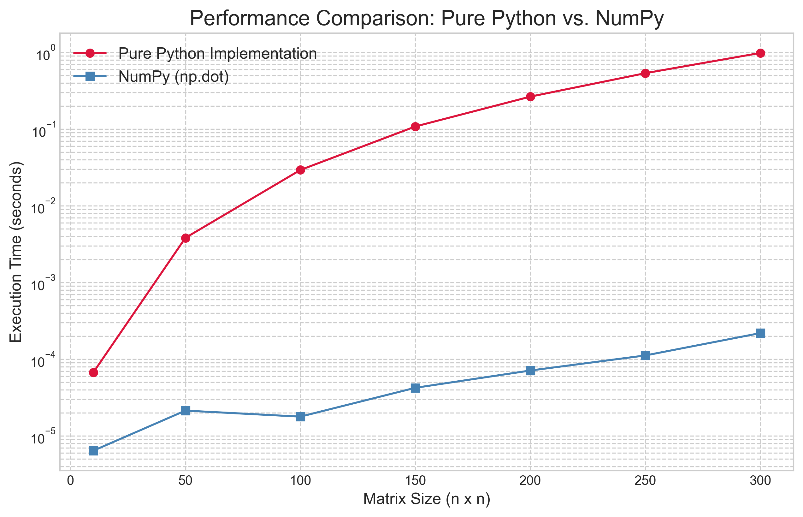
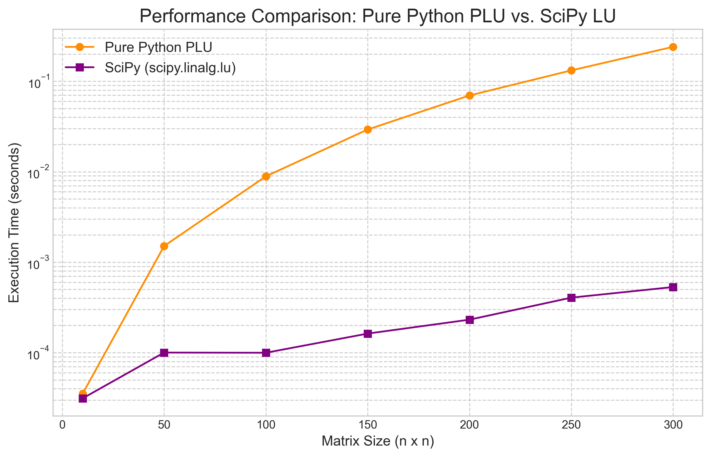

At the heart of nearly every modern scientific and engineering breakthrough lies a computational engine powered by matrix operations. From simulating complex physical systems and training sophisticated machine learning models to rendering computer graphics and analyzing vast datasets, matrix computation is the indispensable bedrock upon which these fields are built. But to truly master this powerful toolkit, we must look beyond abstract theory and ask a simple, practical question: "What does it cost to compute?"
This article marks the first step in a journey from fundamental principles to advanced computational techniques. We will begin not with complex theorems, but with an investigation into the tangible cost of computation. By implementing primitive operations like vector and matrix multiplication from scratch, we will develop a practical intuition for algorithmic complexity and scaling. We will then peel back the layers of the modern scientific computing stack, discovering why a simple command in a high-level language like Python can vastly outperform our own code by leveraging decades of optimization in underlying libraries like BLAS and LAPACK.
Finally, we will use this foundational knowledge to build and analyze our first workhorse algorithm: the LU decomposition. This will tie together the concepts of cost and the stack, providing a concrete example of how a complex problem is solved efficiently and robustly in practice. By the end of this article, you will have a firm grasp of the core concepts that dictate performance in numerical linear algebra, setting the stage for the more advanced topics to come.
The Building Blocks: Complexity of Primitive Operations
Before we can construct complex algorithms, we must first understand the cost of their most basic components. In computation, "cost" primarily refers to time (how long an operation takes) and memory (how much space it requires). The most common way to analyze this cost is with Big O notation, which describes how an algorithm's performance scales as the size of the input, denoted by n, grows larger. It provides a high-level understanding of an algorithm's efficiency, ignoring constant factors and focusing on the dominant growth trend.
Let's build and analyze these primitive operations from scratch in Python to develop a concrete feel for their cost.
Vector-Vector Operations ($O(n)$)
These are the simplest operations, involving vectors of size n. Their cost scales linearly with n; if you double the size of the vectors, the work required also doubles. A common example is the dot product, which requires one multiplication and one addition for each of the n elements.
def vector_dot_product(v1, v2):
"""Computes the dot product of two vectors."""
if len(v1) != len(v2):
raise ValueError("Vectors must have the same dimension.")
return sum(x * y for x, y in zip(v1, v2))Matrix-Vector Multiplication ($O(n^2)$)
Multiplying an m x n matrix by an n x 1 vector results in an m x 1 vector. For a square n x n matrix, the process involves computing n separate dot products, each of cost $O(n)$. This results in a total complexity of $n \times O(n) = O(n^2)$.
def matrix_vector_product(A, x):
"""Computes the product of a matrix A and a vector x."""
m_rows = len(A)
n_cols = len(A[0])
if n_cols != len(x):
raise ValueError("Matrix column count must match vector length.")
result = [0] * m_rows
for i in range(m_rows):
for j in range(n_cols):
result[i] += A[i][j] * x[j]
return resultMatrix-Matrix Multiplication ($O(n^3)$)
The cost escalates significantly when multiplying two matrices. To compute the product of two n x n matrices, A and B, we are essentially performing n matrix-vector products—one for each column of B. This leads to a total complexity of $n \times O(n^2) = O(n^3)$.
def matrix_matrix_product(A, B):
"""Computes the product of two matrices A and B."""
m_rows_A = len(A)
n_cols_A = len(A[0])
m_rows_B = len(B)
n_cols_B = len(B[0])
if n_cols_A != m_rows_B:
raise ValueError("Inner dimensions of matrices do not match.")
result = [[0 for _ in range(n_cols_B)] for _ in range(m_rows_A)]
for i in range(m_rows_A):
for j in range(n_cols_B):
for k in range(n_cols_A): # This is the dot product loop
result[i][j] += A[i][k] * B[k][j]
return resultAn $O(n^3)$ algorithm's cost grows explosively. Doubling the matrix size increases the runtime by a factor of eight. This is why a naive implementation quickly becomes impractical for even moderately sized matrices, and it underscores the critical need for performance optimization, which we will explore next.
The Scientific Computing Stack: Why NumPy is Fast
Our from-scratch matrix_matrix_product function works, but it's slow. In contrast, scientific computing libraries like NumPy perform the same operation orders of magnitude faster. This isn't magic; it's the result of a hierarchical software stack where each layer is specialized for a specific task. When you call a function in NumPy, you are not running simple Python code; you are accessing a deep well of highly optimized, low-level routines.
The stack can be visualized as a pyramid:
- Python (NumPy/SciPy): The User Interface. At the top is the high-level language we interact with. Python provides a clean, user-friendly syntax. Libraries like NumPy give us powerful data structures (like the
ndarray) and a simple API (numpy.dot()). The main goal here is productivity and ease of use. - LAPACK (Linear Algebra Package): The Algorithm Library. Beneath NumPy lies LAPACK. This is a library, typically written in Fortran, that contains sophisticated algorithms for high-level matrix operations, such as solving linear systems, finding eigenvalues, or computing matrix factorizations like the LU or QR decompositions we will study.
- BLAS (Basic Linear Algebra Subprograms): The Optimized Engine. At the very bottom is BLAS. This is a specification for a set of low-level routines that perform the most basic vector and matrix operations: vector dot products (Level 1), matrix-vector products (Level 2), and matrix-matrix products (Level 3). Hardware vendors (like Intel, AMD, NVIDIA) provide highly optimized implementations of the BLAS specification (like MKL or OpenBLAS) that are tailored to their specific processor architecture.
When you call numpy.dot(A, B), NumPy bypasses Python's interpreter and calls a pre-compiled Level 3 BLAS routine (like dgemm for double-precision general matrix-matrix multiply). This routine has been perfected over decades to be as fast as the hardware will allow.
To prove this point, we benchmarked our pure Python matrix_matrix_product against NumPy's np.dot function for a range of matrix sizes.

The results in Figure 1 are staggering. The line for the pure Python implementation climbs steeply, clearly showing its theoretical $O(n^3)$ nature as the execution time explodes. In stark contrast, the line for NumPy is several orders of magnitude lower. A notable feature of the results is that the empirical performance of the NumPy implementation does not exhibit the same cubic growth rate as the naive algorithm.
This discrepancy reveals a crucial lesson in high-performance computing: theoretical complexity (Big O) describes how an algorithm scales in the abstract, but practical performance is dominated by how well the implementation utilizes the underlying hardware. Optimized BLAS libraries, which power NumPy, employ several sophisticated techniques to move far beyond the performance of our naive algorithm. The two primary techniques are cache blocking and the use of vector instructions. Cache blocking, or tiling, addresses the latency gap between fast CPU caches and slower system RAM. Instead of the naive three-loop algorithm which jumps around in memory and causes frequent "cache misses," optimized routines break large matrices into small blocks that fit into the cache, performing all necessary multiplications on a block before moving on. Concurrently, these libraries leverage Single Instruction, Multiple Data (SIMD) instructions, which allow processors to perform a single operation on multiple pairs of numbers simultaneously, achieving a level of parallelism impossible in a standard Python loop.
While the fundamental complexity of matrix multiplication remains polynomial, these hardware-aware optimizations dramatically reduce the "constant factor" hidden by Big O notation, resulting in the massive real-world speedup we see in Figure 1. This reinforces our main lesson: for performance, leverage the work of others and rely on the optimized, battle-tested libraries that form the foundation of the scientific computing stack.
The Workhorse Algorithm: LU Decomposition
Now that we understand the cost of basic operations and the importance of optimized libraries, we can build our first major algorithm. The LU Decomposition is a fundamental technique in numerical linear algebra that serves as the primary method for solving systems of linear equations.
The core idea is to factorize a square matrix $A$ into the product of two simpler matrices: a lower triangular matrix $L$ and an upper triangular matrix $U$.
This factorization is powerful because it transforms a single, complex problem—solving $Ax = b$—into two much simpler, sequential problems. By rewriting the system as $LUx = b$ and introducing an intermediate vector $y = Ux$, we can first solve the lower-triangular system $Ly = b$ for $y$ using a process called forward substitution. Once $y$ is known, we then solve the upper-triangular system $Ux = y$ for the final solution vector $x$ using backward substitution.
Solving systems with triangular matrices is computationally cheap ($O(n^2)$), so the main cost lies in obtaining the factorization itself. The algorithm to do this is a programmatic version of Gaussian elimination. A naive implementation of LU decomposition, however, faces a critical flaw: it can fail if a zero is encountered on the diagonal (the "pivot" element) during factorization. Consider the simple matrix:
No LU factorization exists for this matrix. However, a more subtle and common problem is encountering a pivot element that is very small (but not exactly zero). Dividing by a small number can amplify rounding errors present in finite-precision computer arithmetic, leading to a numerically unstable and inaccurate solution. The standard solution to both problems is partial pivoting. Before each step of the elimination, we search the current column (from the diagonal downwards) for the element with the largest absolute value. We then swap the entire row containing this largest element with the current pivot row. This ensures that we always divide by the largest possible number, which minimizes the growth of rounding errors and makes the algorithm robust.
This process of row-swapping is tracked by a permutation matrix $P$, which is an identity matrix with its rows rearranged. The result is that we no longer factorize $A$ directly, but rather a row-permuted version of it. The final, stable factorization is thus:
This is the form of LU decomposition used in all professional-grade numerical libraries. Here is a from-scratch implementation that incorporates partial pivoting. It returns the permutation matrix $P$ along with $L$ and $U$.
def plu_decomposition(A):
"""
Performs PLU Decomposition of a square matrix A.
Args:
A: A square matrix (list of lists).
Returns:
A tuple (P, L, U) where P is a permutation matrix, L is a lower
triangular matrix with ones on the diagonal, and U is an upper
triangular matrix.
"""
n = len(A)
U = [row[:] for row in A] # Make a copy
L = [[0.0] * n for _ in range(n)]
P = [[float(i == j) for i in range(n)] for j in range(n)]
for j in range(n):
# Find the row with the largest pivot
pivot_row = j
for i in range(j + 1, n):
if abs(U[i][j]) > abs(U[pivot_row][j]):
pivot_row = i
# Swap rows in U and P
U[j], U[pivot_row] = U[pivot_row], U[j]
P[j], P[pivot_row] = P[pivot_row], P[j]
# Also swap the corresponding rows in L that have been computed
for k in range(j):
L[j][k], L[pivot_row][k] = L[pivot_row][k], L[j][k]
# Set diagonal of L to 1
L[j][j] = 1.0
# Eliminate
for i in range(j + 1, n):
if U[j][j] == 0:
# This should not happen with proper pivoting for non-singular matrix
# but included for robustness.
raise ValueError("Matrix is singular and cannot be decomposed.")
factor = U[i][j] / U[j][j]
L[i][j] = factor
for k in range(j, n):
U[i][k] -= factor * U[j][k]
return (P, L, U)A formal analysis of the plu_decomposition function reveals that its computational cost is dominated by the triple-nested loop structure within the elimination section. The outermost loop iterates $n$ times over each pivot column, the second loop iterates over the rows below the pivot, and the innermost loop updates each element in a given row. This innermost loop, which performs one multiplication and one subtraction, is the source of the algorithm's primary workload. A detailed operation count shows that this structure performs approximately $\frac{2}{3}n^3$ floating-point operations. While the algorithm also performs other tasks, such as searching for the largest pivot and swapping rows, these operations have a lower computational complexity of $O(n^2)$. For large matrices, the cubic term from the elimination process is asymptotically dominant. Therefore, the overall computational complexity of LU decomposition with partial pivoting is $O(n^3)$, the same order as the naive matrix multiplication algorithm analyzed earlier.
To complete our analysis, we benchmark our from-scratch plu_decomposition against the professionally optimized scipy.linalg.lu function, which calls down to compiled LAPACK routines.

The results in Figure 2 are definitive. As with our earlier test, while our pure Python implementation correctly exhibits the expected $O(n^3)$ performance curve, the SciPy/LAPACK version is multiple orders of magnitude faster across all matrix sizes. This again highlights the enormous practical performance gains achieved by using the low-level, hardware-optimized libraries that form the foundation of the scientific computing ecosystem.
Conclusion
In this article, we embarked on a journey from the fundamental costs of computation to the implementation of a sophisticated, robust algorithm. We began by analyzing the complexity of primitive operations, establishing a practical understanding of how computational cost scales with problem size. This led to the discovery of the scientific computing stack, where we saw how high-level libraries achieve incredible performance by leveraging decades of optimization in low-level BLAS and LAPACK routines. Finally, we synthesized these concepts by building and analyzing our own PLU decomposition, a staple algorithm for solving linear systems, and confirmed its performance characteristics against a professional implementation.
Through this process, a core theme has emerged: a deep understanding of computation requires appreciating both the theoretical complexity of an algorithm and the practical realities of its implementation on modern hardware. Understanding algorithms from scratch provides invaluable insight, but for practical performance, we must rely on the highly optimized libraries that have been engineered for this purpose.